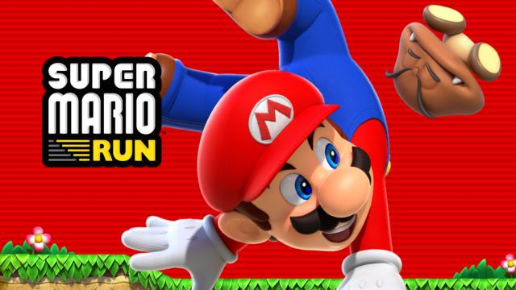

Super Mario Run krijgt 29 september nieuwe modus en levels
Mobiele game Super Mario Run krijgt 29 september een update die onder meer een nieuwe spelmodus en levels toevoegt.
Dat liet Japanse uitgever Nintendo weten.
De nieuwe modus heet Remix 10 en combineert willekeurig tien delen van bestaande levels om zo een nieuw level te creëren. De beloning voor het voltooien van de modus is een nieuw speelbaar personage: prinses Daisy. Zij kan eenmaal in de lucht nog een keer springen.
Nintendo voegt ook een extra wereld toe bestaande uit negen levels, genaamd World Star. Hierin zitten onder meer nieuwe vijanden en spelelementen. De nieuwe wereld is enkel beschikbaar als spelers de huidige zes werelden reeds hebben uitgespeeld.
Smartphonegames
Super Mario Run verscheen in december van vorig jaar voor iOS, de Android-versie volgde in maart. Het is de eerste Mario-game van Nintendo die voor smartphones en tablets is uitgebracht.
Het Japanse bedrijf kwam dit jaar ook met een mobiele Fire Emblem-game. Naar verwachting verschijnt binnen enkele maanden de derde mobiele Nintendo-game, gebaseerd op de Animal Crossing-reeks.
Door: nu.nl
Lees volgende artikel.